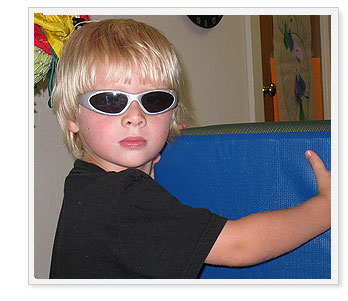

| |

1. What is OT?
2. Who needs OT?
3. What types of challenges do pediatric OTs address?
4. What kinds of children do OTs work with?
5. How does OT work?
6. What is sensory integration?
7. What is self-regulation?
1. What is OT?
Occupational therapy focuses on enabling people to do the activities of daily life. The very word "occupation" - means an activity which "occupies" our time. A child in grade school has the occupation of learning. An adult may need to learn how to write after a traumatic injury. A senior may want to continue driving safely in order to stay active in their community. All of these things are occupations and participating in them is vital to maintaining overall health and wellness.
(from: http://www.aota.org/)
Back to top
2. Who needs OT?
Depending on the causes, any child who is having difficulty functioning or participating in their lives as student, friend, family/home member and/or typically developing young person may be a good candidate for OT intervention. Pediatric OTs work with children of all ages, from birth through young adulthood.
Back to top
3. What types of challenges do pediatric OTs address?
GROSS MOTOR
- Balance
- Strength and Flexibility
- Coordination
- Endurance/Stability
- Motor Planning
- Ball Skills
FINE MOTOR
- Grasp (pencil, utensils, etc.)
- Handwriting
- Coloring/Drawing
- Scissors Use
- Object Manipulation
- Hand Strength, Coordination
- Eye Hand Coordination
VISUAL PERCEPTUAL
- Spatial Concepts
- Attention to Detail
- Figure-Ground
SELF CARE
- Dressing
- Feeding
- Grooming/Self Care
- Independence
SENSORY PROCESSING
- Distraction
- Hyper Responsiveness
- Hypo Responsiveness
- Self-Regulation
- Modulation
COGNITIVE
- Problem Solving
- Sequencing
- Organization
PLAY
- Individual Play Skills
- Social/Peer Play
Back to top
4. What kinds of children do OTs work with?
OT is unique, in that intervention is based on improving function, rather than on focusing on a particular diagnosis. Each child has their own challenges, strengths and goals, so therapy focuses on the gains the child needs to make to be a more successful participant in home, school and community environments. Although OTs often work with children without a diagnosed medical issue, children with the following conditions are typical of the clients an OT may see:
- Autistic Spectrum Disorders
- Learning Disabilities
- Sensory Processing/Sensory Integrative Disorders
- Developmental Delays
- Developmental Coordination Issues
- Cerebral Palsy
- Orthopedic Disorders
- Genetic Syndromes
- Issues resulting from Premature Birth
- Emotional or Behavioral Disturbances
- Anxiety/Depression
- Psychosocial issues
- At-Risk family dynamics
Back to top
5. How does OT work?
OT can work in two ways, by either improving the child’s skills to increase their function, or by helping to change the environment or the demands of the task so that the child can master it.

REMEDIATION:
|
| • |
Teaching new skills to promote development (i.e. instructing a child in scissors grasp and demonstrating the steps involved in cutting paper)
|
| • |
Assisting with the development of foundation skills (i.e. improving a child’s strength, endurance and core stability so that he or she can successfully stand to play ball) |
|
|
ADAPTATION:
|
| • |
Providing alternative strategies for completing a task (i.e. allowing a high energy child who is unable to sit and attend to task the opportunity to stand and work on tabletop tasks) |
| • |
Supplying tools to assist with skill building (i.e. offering a pencil grip to assist with grasp, a visual cue card for communication, or an orthopedic chair to promote upright posture) |
Back to top
6. What is sensory integration?
“Sensory integration is the organization of sensation for use. Our senses give us information about the physical conditions of our body and the environment around us…. The brain must organize all of these sensations if a person is to move and learn and behave normally. The brain locates, sorts, and orders sensations—somewhat as a traffic policeman directs moving cars. When sensations flow in a well-organized manner, the brain can use those sensations to form perceptions, behaviors, and learning. When the flow of sensations is disorganized, life can be like a rush hour traffic jam.”
-Jean Ayres from Sensory Integration and the Child, 1979
“Sensory processing is a term that refers to the way the nervous system receives sensory messages and turns them into responses”.
“The condition increasingly known as Sensory Processing Disorder was first recognized in the mid-1900s and was originally called sensory integration dysfunction. Dr. A. Jean Ayres was an American occupational therapist, educational psychologist, and neuroscientist who pioneered the study of the disorder…. She theorized that when sensory processing is impaired in a child—where there is a ‘sensory integrative dysfunction’—social, emotional, motor, and/or functional problems can result.”
“No ‘cure’ for Sensory processing Disorder is known. However, occupational therapy with a sensory integration approach has been in use for more than forty years and has produced countless success stories in which sensational children and their families emerged with a higher quality of life.”
-Lucy Jane Miller from Sensational Kids: Hope and Help for Children with Sensory Processing Disorder, 2006
For more information and resources on this topic, please call the Center!
Back to top
7. What is self-regulation?
Self-regulation is the nervous system’s ability to attain, maintain and change levels of arousal or alertness (Williams & Shellenberger, 1994). Self-regulation is the result of sensory integration, and a state of being that optimizes a child’s ability to attend and learn.
Back to top
|